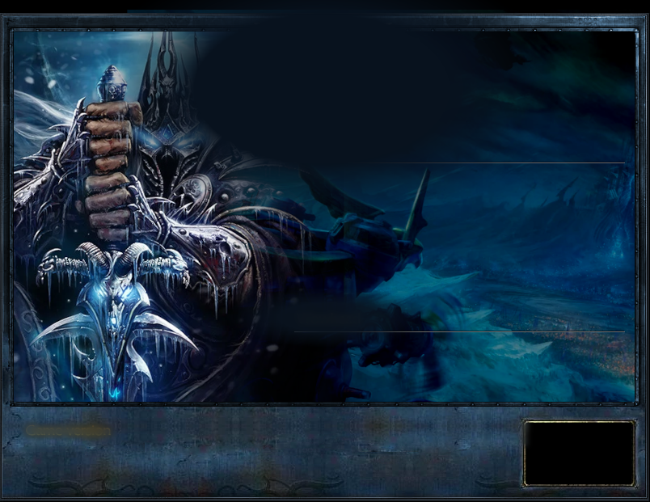
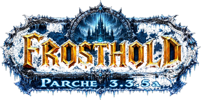

3.3.5a
—
✕
Consultando el reino…
Conectados
—
Cuentas
—
En pie
—
Carpeta del juego
Sin elegir
Elegir…
Ajustes del cliente
Memoria ampliada (4 GB)
El cliente es de 32 bits y arranca limitado a 2 GB aunque tengas más. Levanta una bandera de su ejecutable para que Windows le deje usar 4 GB. Ayuda en bandas y con muchos complementos.
Renderizado por Vulkan (DXVK)
Traduce Direct3D 9 a Vulkan; suele dar más estabilidad en clientes viejos.
Experimental:
DXVK está hecho para Linux y su uso en Windows no lo respaldan sus autores. Si el juego deja de abrir, desmarca esto y vuelve a estar como antes.